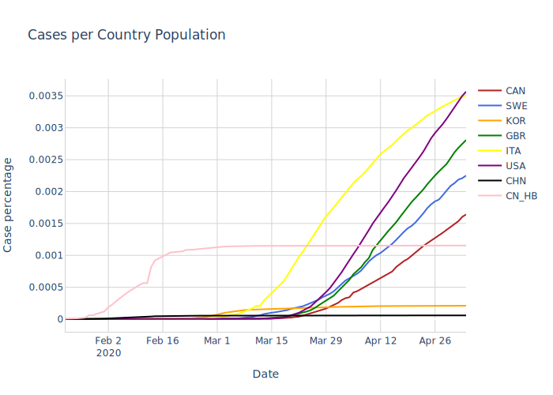

Summary
- Features created:
- The number of deaths per case and the number of tests per population were compared to determine if the number of reported cases are accurate or if instead more testing needs to be done in the region.
- The number of cases per test provides an idea of what percentage of a population has COVID-19, while taking into account the limitations in testing.
- Severity (sum of ICU cases, hospitalizations, number of deaths) provides unbiased trends into the severity of the COVID-19 outbreak in a region.
- The number of ICU cases per death also provides unbiased trends that show when a region's cases have steadied.
- The number of cases per test can show the effects of a region's testing when looked at in conjunction with the number of tests per population.
- Quebec, the Canadian province hit hardest by COVID-19, should have followed British Columbia's COVID-19 testing and control strategies from the beginning, including province-wide communication within the healthcare industry, lots of testing early on, restricting long term care workers to one long term care facility, and recommending against non-essential travel early on.
- The shape of Canada's infection curves are similar to countries with major outbreaks. As such, Canada should take note of other countries' plans for reopening and their results when devising a plan for reopening and containment of the outbreak.
- Based on time series analysis predictions, global cases, deaths, and recoveries will continue to rise exponentially over the next 7 days after May 4th, 2020.
Background
According to the CDC, the Coronavirus pandemic has affected countries world-wide, infecting over 4 million and causing at least 279,000 deaths. With so many people vulnerable to the disease, reducing community transmission through social distancing orders and country-wide lockdowns has become essential to reducing the spread of the virus. However, reducing community transmission has happened at the expense of the economy, and is not sustainable long term. [1]
Infections are still rising quickly in the United States, potentially leaving Canada at risk for more infections due to their proximity.
Canada in particular has had 67,702 confirmed cases, 4,693 deaths, and 31,262 recoveries as of May 4th, 2020 [2]. The majority of cases have come from Quebec with 36,150 confirmed, 2,725 deaths, and 8,928 recovered. While for a short time, British Columbia appeared to be developing into Canada's main epicenter of the virus, its infection rates slowed much quicker than Ontario and Quebec.
In order to stop this virus, herd immunity or immunizations are required, however as only a small percentage of the population has been exposed to the virus and a vaccine typically takes over a year to develop, we can expect the pandemic to continue for the foreseeable future [3].
In the meantime, data analysis and modelling to predict infection rates can be extremely helpful in making decisions towards reopening or shutting down countries and provinces, in tracking the progress of the virus, and in identifying strategies to contain the virus.
Inspiration
This project was inspired by Edureka's COVID-19 Outbreak Prediction using Machine Learning video.
Goal
The goals of this project are to use data analysis and modelling to:
- Observe the current state of COVID-19 in Canada
- Compare differences amongst provinces, with a focus on Quebec and BC
- Compare Canada's status with other countries
- Predict world-wide COVID-19 numbers over 7 days.
My personal goals were to improve my data analysis, modelling, and research skills, and to practice coming up with insights and new features that add value to the analysis
What was challenging about the problem
The biggest challenge was having to handle missing and non-standardized data. As a result, I had to spend significant time cleaning and standardizing the data from different sources.This also limited the inferences and plots that I could make to compare Canadian provinces and other countries as different areas collected different data (i.e. gender, age) in different formats (i.e. wide versus long).In particular, the main table I used in my analysis of Canadian provinces was missing ICU and hospitalization numbers before April 8th, 2020, which skewed some of my results involving BC, whose outbreak was mainly of concern before April 8th.
A second major challenge was that I did not have important data that would have influenced the conclusions and improved the accuracy of the predictions, e.g. age and other medical conditions of the individual cases, and did not have detailed information about the public health measures within each province or within the communities within each province. I was able to show changes in some of the case rates that were explained by some of the public health measures described in the press.
Strategies used throughout the project (Methods and Results)
My Role
Using Python, Jupyter Notebook, and Libraries such as Pandas, Numpy, Seaborn, Matplotlib, and Plotly, I gathered data from several different sources to produce tables, graphs, and new features from which I could base insights off of. I also performed research to provide background and to gain insight into the status of COVID-19 in Canadian Provinces and other countries.
Reading/Cleaning/Formatting Data
To do the analyses, I had to first clean and format the data properly:
- Converted JH wide data to long data format
- Combined total cases, deaths, and recovered global data, accounting for inconsistencies among the Provincial data
- Removing unnecessary columns (i.e. ID), rename columns to standardize column names across tables, formatting columns as appropriate (i.e. converting to datetime format, convert to title format, correct inconsistencies in naming)
Analyses
Summary Statistics of Canadian Data
Overview of cases in Canada [2]
- Total confirmed cases in Canada as of May 9th, 2020: 67702
- Total deaths in Canada as of May 9th, 2020: 4693
- Total recovered in Canada as of May 9th, 2020: 31262
Based on the graph above, we can see that despite a sharp rise in cases near the beginning of May, likely due to changes in COVID-19 testing definitions, Canadian cases appear to be decreasing.
Canadian Provincial Comparison
Comparing provincial totals, it is clear that Quebec has been most affected by COVID-19, followed by Ontario and Alberta.
Overall status as of March 9th, 2020
To compare Canadian provinces in a more readable format, I created a table styled with gradient colours and a horizontal bar graph that clearly shows which provinces have been most affected by COVID-19 outbreaks.

Observations from the figures above:
- Quebec has been hit the hardest by COVID-19 with the highest case rate and death rate and lowest recovery rate
- Ontario had second highest case rate, but has more recoveries than Quebec
- Smaller provinces such as Nova Scotia appear to have a relatively high infection rate with respect to population, so we can infer that COVID-19 is affecting the smaller parts of canada, although the error bars are probably larger because of the smaller number of cases.
Comparing case and death rates with test and ICU rates:
As another measure of how well each province has handled their respective outbreaks, we can divide the total number of deaths by the total number of cases and compare it with the totalnumber of tests by province population. To be entirely accurate in our deaths/cases ratio, the entire population would need to be tested to confirm all existing cases, but since that would not be feasible, we can compare the ratio to the number of tests by population to give us an idea of the true deaths/cases ratio. As the number of tests/population increases, the lower and more accurate the deaths/cases ratio becomes as we can be more certain that the number of cases is accurate as most positive cases should have been identified with more testing. Therefore if the deaths/cases are relatively high in comparison to other provinces but the tests/population rate is relatively low, the deaths/cases is likely lower in real life, and we can conclude that more testing needs to be done in that province.
Observations from the graph above:
- BC remains way above Alberta in terms of death rate per confirmed case, despite having 4000 fewer confirmed cases.
- This could be attributed to the point above, as we can see that Alberta has tested significantly more than almost all provinces given their population.
- Quebec's Total Deaths per Case graph follows the shape of BC's, just 10 days behind. However, when BC's curve began to flatten out on April 13th, about 5 weeks after their outbreak had started, Quebec's curve was still growing. This leads us to conclude BC likely could have been in the same position as Quebec is now, with ever-increasing cases had they not made immediate public health and other changes early in the course of the pandemic
Compare Rates by Population
By graphing the number of ICU cases with respect to population and comparing it to the number of confirmed cases with respect to population, we can conclude which provinces were truly burdened by the virus.
Observations from the graph above:
- The two provinces with the highest cases per population are Quebec and Alberta, but Alberta has a lower ratio of ICU per population
- Quebec's health system has been more severely affected by the disease as their ICU rates are the highest per population
Focussed analyses: Quebec and BC
Given BC's success in flattening the curve after initially having the highest number of Cases in Canada and given Quebec's current status as the epicenter of COVID-19 in Canada, I decided to focus my analyses on these two provinces to highlight strategies that did and did not work in flattening the curve.
Quebec
Quebec has just under a quarter of Canada's population yet it also has the highest number of coronavirus cases in the country.
Quebec shut down schools and recommended against non-essential travel after the province had gone on spring break. The province's spring break took place the first week of March, and as far as most people knew at the time, the coronavirus was mostly affecting Asian countries, and Italy. However, soon after Quebec's spring break had started, several cities in the U.S. declared a state of emergency. Quebec only shutdown schools and recommended against non-essential travel on March 13th, after Quebec students had already been back in classes 4 days earlier after returning from vacation. It is likely that Quebec's early spring break was a factor in the province's high infection rate, as other provinces such as British Columbia shut down schools before their spring break, resulting in far fewer cases of coronavirus, despite BC's initial higher case rate [4].
Another reason for the high number of cases may have been retirees who spent their winter in warmer places, such as Florida or Hawaii. After the announcement of the pandemic and many flights getting cancelled, many of these people returned to Canada all at once, aware they needed to self-isolate for 14 days. However, as few of them had any food or supplies remaining at their homes, several people went to local supermarkets to stock up before going into quarantine, causing a sharp rise in cases [5] [6].
Based on the map above, we can observe that the majority of cases in Quebec come from Montreal, Laval, and Lanaudière. This makes sense as Monreal centre major airport for international travel, with many flights coming from New York, one of the biggest COVID-19 hotspots in the world, and due to Quebec's close proximity to the United States, center to the majority of the world's COVID-19 cases. Montreal, Laval, and Lanaudièrealso have the most dense populations in Quebec, which may help to explain the highest rates.
In British Columbia, a province that had tied for the most cases in Canada with Ontario until March 23rd and had the most cases with respect to its population from the beginning of February until April 3rd, the number of cases has been consistently low ever since. BC has had a tremendous decrease in cases, currently sitting at just over 2300 total cases as of May 9th. By comparing the early part of BC's case rate, we can see how BC managed to flatten their curve.
Analysis of the effect of different testing and public health strategies in Quebec vs. British Columbia
In the graphs below, there are some obvious spikes in the number of cases per test. These are often due to changes in testing criteria, which usually brings on a significantly higher number of cases that day.
Province-wide testing changes
Quebec changes to screening [7]:
- March 18th: Increase in screening capacity
- March 22nd: Cases tested positive by hospital laboratories are now considered confirmed.
- April 8th: Staff and all residents of CHSLDs must systematically undergo screening tests for COVID-19.
Testing context BC [8]:
- As of March 16, testing guidelines changed to focus on hospitalized patients, healthcare workers, long term care facility staff and residents, and those part of a cluster or outbreak who experienced respiratory symptoms.
- As of April 9, previous testing guidelines were expanded to include individuals with fever (>38°C) and cough or shortness of breath, including (a) residents of remote, isolated or Indigenous communities, (b) people living and working in congregate settings such as work-camps, correctional facilities, shelters, group homes, assisted living and seniors' residences, (c) people who are homeless or have unstable housing, (d) essential service providers (e.g. first responders), or (e) returning travellers identified at a point of entry to Canada. In addition to these priority groups, health care providers can order a COVID-19 test for any patient based on their clinical judgment.
- As of Apr 21, universal testing guidelines were implemented to include all symptomatic individuals with fever (>38°C) and cough or shortness of breath.
- April 15th: Change in reported testing definition. [Berry I, Soucy J-PR, Tuite A, Fisman D. Open access epidemiologic data and an interactive dashboard to monitor the COVID-19 outbreak in Canada. CMAJ. 2020 Apr 14;192(15):E420. doi: https://doi.org/10.1503/cmaj.75262]
Steps BC took to contain the virus
In addition to luck, BC took the following steps to avoid becoming the next virus epicenter [9]:
- Early communication across the province from higher ups to all doctors and centers regarding COVID-19 symptoms to look out for
- Cancelled elective surgeries early to free up hospital beds in case COVID-19 hospitalizations increased
- One of the first to develop a test for the disease
- Lots of testing done early (started end of January), especially at long-term care facilities
- Long-term care facilities stopped allowing visitors at the first sign of the disease and employees were required to work for one long-term care facility at most
- Ontario and Quebec didn't do the employee thing until later in the crisis
- Recommended against all non-essential travel outside of Canada and shutdown schools right before students left for spring break on March 12th (also had the advantage of having a late spring break) [10]
- Shutdown of personal service establishments March 21st [11]
- In contrast, Quebec did not take such immediate action with their long-term care facilities until well into their crisis and due to the early timing of their spring break [9], they did not not recommend against non-essential travel before many of their residents went on vacation for spring break.
To compare the number of positive cases per number of tests, two new features were created. The total number of cases (TotalCases) was divided by the total number of tests (TotalTested) to see cumulative trends in the number of positive cases per number of tests (CasePerTest) and the daily number of cases (DailyTotals) was divided by the daily number of tests (DailyTested) to give a daily trend in the number of positive cases per number of tests (CasePerTestDaily).
In the early days where some daily testing numbers were 0, which may have been because the number of tests were not being tracked at the beginning of the pandemic - we will drop rows where CasePerTest or CasePerTestDaily are 0, as these values will not accurately represent the the actual positive cases/test, since anything divided by 0 is infinity. These values will not be replaced with the mean value of the respective column as most values of 0 completed daily tests were in the early days of the pandemic, so replacing 0 with a much larger value would skew early results
As mentioned above, we can see that BC was testing much more than Quebec until the end of March. Increasing testing early on likely allowed BC to quickly flatten its curve. By comparing the tests per population to the number of deaths per case, we can infer that BC is has performed better than Quebec as their test rates are lower and their
Positive cases per test
Looking at the ratio of positive cases per test, we can see the effects of a province's testing. As BC has a ratio close to 0 for the total positive cases per test, we can infer that the province is performing testing with few tests coming back positive, but we don't know how much testing is being done solely based on the ratio of cases per test. However as we know from plotting the total number of tests per population, BC is not testing nearly as much as Quebec and therefore we know that the number of cases must be low as we are not testing that many people.
Attempting to compare severity to achieve unbiased observations
While daily testing and positive case numbers can be somewhat inaccurate due to limited testing supplies leading to fewer tests given resulting in fewer positive cases being found during the months of March and early April and trouble in data collection due to a sudden intake in hospitalizations and testing demand, daily deaths, hospitalizations, and ICU numbers are less subjected to bias.
Therefore I created two new features, severity and ICU cases per death, to find unbiased trends in my data. Severity was calculated using the sum of deaths, hospitalizations, and ICU cases, and ICU cases per death was calculated by dividing the number of cases by the number of deaths. In addition, changing testing criteria and protocols lead to sudden increases in cases on the days of the updates.
A province that would be considered stable and to have rid their COVID-19 infections would have a graph that descends until the total number of deaths, ICU cases, and hospitalized cases stop increasing, when it will look near constant. As we can see below, BC has essentially reached this point of stability in which the number of ICU and Hospitalized cases have reduced drastically. As Quebec's graph is still increasing, we can infer that the province has not yet been able to control their outbreak and the number of deaths, ICU cases, and hospitalized cases will continue to grow.
It is important to note that the total and daily number of ICU patients and hospitalized patients are missing from all provinces from the Provincial_Daily_Totals.csv file until April 8th, 2020. This largely affects BC's numbers in particular as BC was a main center for the COVID-19 breakout in Canada from mid-March until the beginning of April and we therefore miss the severity of BC's ICU and Hospitalized cases at its peak. Without daily data leading up to April 8th, all of the ICU cases were provided at once as a daily increase on April 8th. I was unable to find any datasets with ICU or hospitalization numbers for BC prior to April 8th. The numbers for Quebec are from a different dataset from the government of Quebec that contains cumulative ICU and hospitalization numbers from before April 8th, 2020.
Comparison of Canadian and International Outcomes

Infection rates per population
By plotting infection rates per population, we can clearly see how well each country has handled their respective COVID-19 outbreaks. Italy and the U.S. have the highest ratio, however where Italy is flattening, the U.S. mirror's Italy's shape during the month of March, looking like growth will continue for the foreseeable future. These countries are followed by the UK and then Sweden. Sweden has been criticized for refusing to impose a strict lockdown, leaving businesses and schools for those under 16 open, enforcing social distancing, and allowing small groups to meet [12].
With their healthcare system able to handle the amount of COVID cases thus far, Sweden seems to have managed their outbreak and saved their economy in the short run, however in the long run, Sweden's economy is likely to be just as affected as other countries who imposed full lockdown [13].
Canada is not doing terribly in relation to other country's infection rate with respect to population, however there is obviously room for improvement as South Korea, China, and Hubei province were able to flatten their curves quickly despite their high populations and limited square footage.
Based on the above plots, Canada should aim to be like South Korea and China, who have flattened their curves, creating more of a sigmoid function. While it doesn't look like Canada's graph has flattened, the number of confirmed cases per day have decreased.
Infection rates per country (bar graph)
The shape of Canada's graph above follows a similar shape to the US, the UK, Sweden, and the early parts of Italy and South Korea. It is likely that Canada's numbers will continue to grow in the near future, however considering the infection rate with respect to population, it is unlikely that Canada will become the next U.S. or Italy if the country is re-opened carefully and its population follows social distancing and hand hygiene practices.
Global Predictions using Prophet
Modelling cases, deaths, recoveries
Based on the graphs above, global cases, deaths, and recoveries will continue to rise for the foreseeable future. This trend will continue until either a vaccine is discovered or until herd immunity is achieved, both of which will take time to occur.
Sources
[1] "Coronavirus Disease 2019 (COVID-19) Situation Summary", Centers for Disease Control and Prevention, 2020. [Online]. Available: https://www.cdc.gov/coronavirus/2019-ncov/cases-updates/summary.html#covid19-pandemic. [Accessed: 27- Apr- 2020].
[2] "Provincial Daily Totals", Resources-covid19canada.hub.arcgis.com, 2020. [Online]. Available: https://resources-covid19canada.hub.arcgis.com/datasets/provincial-daily-totals/data?page=7. [Accessed: 27- Apr- 2020].
[3] N. Bogart, "When and how will the COVID-19 pandemic end?", Coronavirus, 2020. [Online]. Available: https://www.ctvnews.ca/health/coronavirus/when-and-how-will-the-covid-19-pandemic-end-1.4936086. [Accessed: 27- Apr- 2020].
[4] "Why Quebec's coronavirus cases have skyrocketed", The Globe and Mail, 2020. [Online]. Available: https://www.theglobeandmail.com/canada/article-why-quebecs-coronavirus-cases-have-skyrocketed/. [Accessed: 27- Apr- 2020].
[5] "Quebec snowbirds flock home from Florida in 50 chartered buses | CBC News", CBC, 2020. [Online]. Available: https://www.cbc.ca/news/canada/montreal/snowbirds-scrambling-to-return-to-quebec-1.5502182. [Accessed: 27- Apr- 2020].
[6] P. Inc., "RV-driving snowbird who recently travelled to U.S. expelled from two Quebec grocery stores", National Post, 2020. [Online]. Available: https://nationalpost.com/news/local-news/coronavirus-rv-driving-snowbird-expelled-from-two-quebec-grocery-stores/wcm/1d226434-8655-4625-8098-72fa0a6be4d5. [Accessed: 27- Apr- 2020].
[7] "Ligne du temps COVID-19 au Québec | INSPQ", INSPQ, 2020. [Online]. Available: https://www.inspq.qc.ca/covid-19/donnees/ligne-du-temps. [Accessed: 27- Apr- 2020].
[8] Governmentofbc.maps.arcgis.com, 2020. [Online]. Available: https://governmentofbc.maps.arcgis.com/home/item.html?id=f7d1318260b14ac2b334e81e55ee5c9e. [Accessed: 27- Apr- 2020].
[9] "Bloomberg - Are you a robot?", Bloomberg.com, 2020. [Online]. Available: https://www.bloomberg.com/news/articles/2020-05-16/a-virus-epicenter-that-wasn-t-how-one-region-stemmed-the-deaths. [Accessed: 27- Apr- 2020].
[10] "Why B.C. is flattening the COVID-19 curve while numbers in central Canada surge | CBC News", CBC, 2020. [Online]. Available: https://www.cbc.ca/news/canada/british-columbia/bc-ontario-quebec-covid-19-1.5524056. [Accessed: 27- Apr- 2020].
[11] "Coronavirus outbreak: New order in B.C. mandates shut down of all personal service establishments | Watch News Videos Online", Global News, 2020. [Online]. Available: https://globalnews.ca/video/6713347/coronavirus-outbreak-new-order-in-b-c-mandates-shut-down-of-all-personal-service-establishments. [Accessed: 27- Apr- 2020].
[12] "Swedish PM bristles at foreign criticism over COVID-19 fight | CBC News", CBC, 2020. [Online]. Available: https://www.cbc.ca/news/world/sweden-pm-lofven-coronavirus-1.5571073. [Accessed: 27- Apr- 2020].
[13] H. Ellyatt, "Sweden had no lockdown but its economy is expected to suffer just as badly as its European neighbors", CNBC, 2020. [Online]. Available: https://www.cnbc.com/2020/04/30/coronavirus-sweden-economy-to-contract-as-severely-as-the-rest-of-europe.html. [Accessed: 27- Apr- 2020].
[14] "Données COVID-19 au Québec | INSPQ", INSPQ, 2020. [Online]. Available: https://www.inspq.qc.ca/covid-19/donnees. [Accessed: 27- Apr- 2020].
[15] Berry I, Soucy J-PR, Tuite A, Fisman D. Open access epidemiologic data and an interactive dashboard to monitor the COVID-19 outbreak in Canada. CMAJ. 2020 Apr 14;192(15):E420. doi: https://doi.org/10.1503/cmaj.75262
[16] COVID-19 Data Repository by the Center for Systems Science and Engineering (CSSE) at Johns Hopkins University. https://github.com/CSSEGISandData/COVID-19